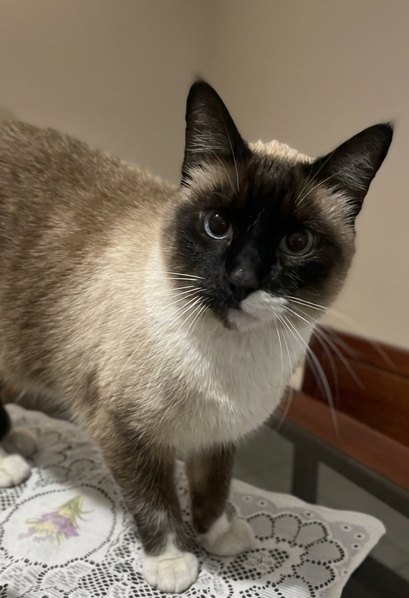

Abril · 2016
O Resgate
Em uma noite fria e chuvosa, o Ollie foi resgatado ainda muito assustado, carregando medos profundos.

Um serviço de pet sitting pensado para gatos exigentes. Recomendado pelo Ollie, que entende bem o que é território sagrado.
 Essencial Care, Zona Sul de São Paulo
Essencial Care, Zona Sul de São Paulo

Oi, meu humano de estimação,
Eu sou o Ollie. Nós, gatinhos, somos conhecidos por sermos puro charme e fofura, mas hoje eu vim abrir o meu coração para você.
A verdade é que nós amamos o aconchego do nosso lar, o nosso cheirinho nas coisas e a nossa rotina cheia de paz. Para nós, não existe lugar melhor no mundo do que o nosso próprio território, até porque a casa é nossa e você é só o nosso colega de quarto favorito.
Pensando em todo esse amor e no bem-estar dos felinos, a minha tutora criou a Essencial Care, que é um cuidado com jeitinho certo para gatinhos exigentes. Ela vai até a nossa casa com todo o carinho do mundo para você viajar ou trabalhar com o coração tranquilo, enquanto você se esforça para garantir os nossos sachês.
P.S. Se quiser conhecer melhor o serviço que eu mesmo aprovei, é só agendar uma visita.
Pequenos detalhes que fazem toda a diferença na rotina do seu pet.
Seu gato permanece no território dele, sem o estresse de caixas de transporte ou viagens.
Água trocada, comida servida com cuidado e caixinha de areia sempre limpa.
Horários consistentes que trazem segurança e tranquilidade para o seu pet.
Paciência e sensibilidade para gatos tímidos, sem forçar interações.
A jornada real que deu origem à Essencial Care.
Em uma noite fria e chuvosa, o Ollie foi resgatado ainda muito assustado, carregando medos profundos.
Escondido embaixo do sofá, recusando até os melhores petiscos, o Ollie só se sentia seguro perto da tutora.

A tutora se tornou aluna e estudou Comportamento Felino para aprender a ouvir o silêncio do Ollie, com paciência e respeito ao tempo dele.
Aos poucos, o Ollie saiu do sofá para tomar sol e interagir feliz. Dessa jornada nasceu a Essencial Care, um serviço feito para acolher o coração felino.

Oito protocolos que garantem segurança, higiene e tranquilidade em cada visita.
Enviamos uma foto assim que chegamos, avisando que está tudo bem.
Higienização cuidadosa dos potes de comida, água e caixinha de areia.
Acompanhamento constante durante toda a visita, prevenindo acidentes.
Equipe capacitada em primeiros socorros veterinários para agir em emergências.
Respeitamos o ritmo e a personalidade de cada gato, sem forçar interações.
Cuidados de higiene e bem-estar em cada visita.
Registro fotográfico ao final, confirmando que seu pet está seguro e bem cuidado.
Capacitação para administrar remédios orais ou contínuos, conforme prescrição veterinária.

Transparência e credibilidade em cada atendimento.
Todos os termos alinhados antes da primeira visita.
Confiança e segurança para receber alguém em casa.
Proteção contra imprevistos, com tranquilidade para você.
Cada atendimento é documentado, garantindo rastreabilidade.
Telefone e suporte disponíveis para dúvidas a qualquer momento.
Apresentamos nossos serviços, conhecemos seu pet e alinhamos a rotina de cuidados.
Levamos cuidado, segurança e rotina até o território do seu gato, sem estresse de transporte ou mudança de ambiente.
Sinais sutis que revelam o que ele está sentindo, e como responder com paciência.
Arranhadores, alturas e esconderijos: pequenas mudanças que fazem grande diferença.
O que observar e como adaptar a rotina para o conforto do seu gato mais velho.
Fale com a gente e conheça o serviço recomendado pelo Ollie.
Agendar Visita